Session 13 · Wed Oct 28 · Book section 3.3
🌀
Analysts at the Pacific Northwest Seismic Network labeled 4,000 events as earthquakes, explosions, surface events or noise.
If we hide the labels, do the waveforms still fall into those four groups?
Reading: 3.3 Clustering · uses PCA from 2.12
📍 In-situ sensor 🌊 Ocean 🌊 Oceanography
Maze et al. (2017), Progress in Oceanography 151, 275–292 · rebuilt from 2023 Argo profiles (Ifremer ERDDAP)
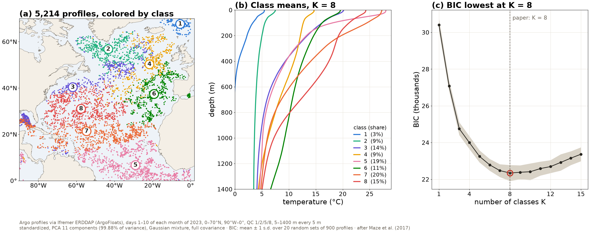
Grouping profiles by shape alone, with no positions given, recovers ocean regions such as the subpolar gyre and the Eighteen Degree Water.
46,000
Earthquake spectra from The Geysers, 2012 to 2014, grouped by k-means with no labels. Each of the four clusters peaks once a year, in turn, following the water-injection rate.
Holtzman, B. K., Paté, A., Paisley, J., Waldhauser, F., & Repetto, D. (2018). Machine learning reveals cyclic changes in seismic source spectra in Geysers geothermal field. Science Advances, 4(5), eaao2929.
10 → 4
A Gaussian mixture started with 10 clusters on one day of one Greenland station and kept 4. One of them holds the repeating precursors of the 2017 Nuugaatsiaq landslide.
Seydoux, L., Balestriero, R., Poli, P., de Hoop, M., Campillo, M., & Baraniuk, R. (2020). Clustering earthquake signals and background noises in continuous seismic data with unsupervised deep learning. Nature Communications, 11, 3972.
43%
K-means on the terms of the barotropic vorticity budget splits the global ocean into five main dynamical regimes. The largest, depth-coherent flow, covers 43% of the ocean area.
Sonnewald, M., Wunsch, C., & Heimbach, P. (2019). Unsupervised learning reveals geography of global ocean dynamical regions. Earth and Space Science, 6(5), 784–794.
k ≥ 4
On uniform noise, which has one cluster, all eight elbow-based rules tested pick four or more.
Schubert, E. (2023). Stop using the elbow criterion for k-means and how to choose the number of clusters instead. ACM SIGKDD Explorations Newsletter, 25(1), 36–42.
Clusters found without labels became findings when they lined up with something measured independently: an injection schedule, a landslide, a flow regime.
🗂️ Catalog & compiled product 🪨 Solid Earth 🌋 Volcanology
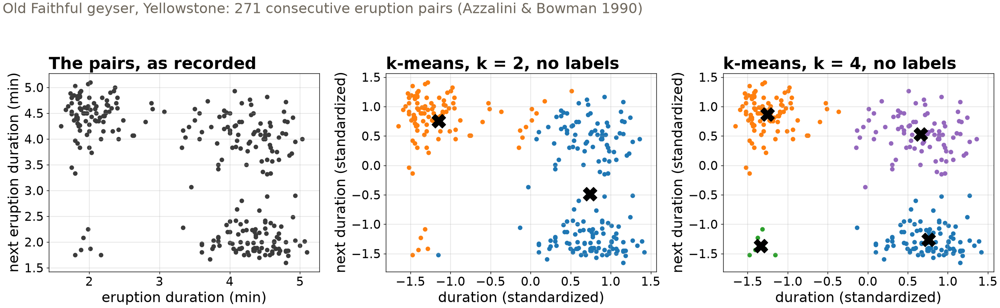
One sample is a pair of consecutive eruptions, so two eruption modes make up to four kinds of pair; k-means finds them without labels (silhouette 0.56 at k = 2, 0.69 at k = 4).
The groups depend on the distance you chose and on where the loop started, so both are part of the result.
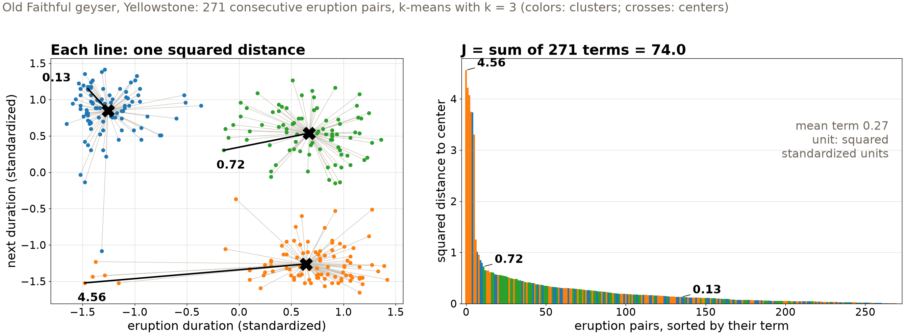
\[J = \sum_{i=1}^{n} \lVert \mathbf{x}_i - \boldsymbol{\mu}_{c(i)} \rVert^2\]
Inertia J adds up the squared distance from every sample to the center of its cluster: 74.0 for 271 eruption pairs at k = 3, with the few short-then-short pairs contributing the largest terms.
| Distance | Measures | Geoscience use |
|---|---|---|
| Euclidean | straight line across standardized features | waveform features, geochemistry; the one k-means uses |
| Manhattan | sum of absolute differences | features with outliers |
| Correlation | 1 − correlation: shape, whatever the amplitude | waveforms, profiles: template matching |
| Great-circle | along the Earth’s surface, in km | epicenters, stations, floats |
k-means uses only Euclidean distance; other distances go into hierarchical clustering as a precomputed matrix.
🖥️ Model & simulation 🪨 Solid Earth 📈 Seismology
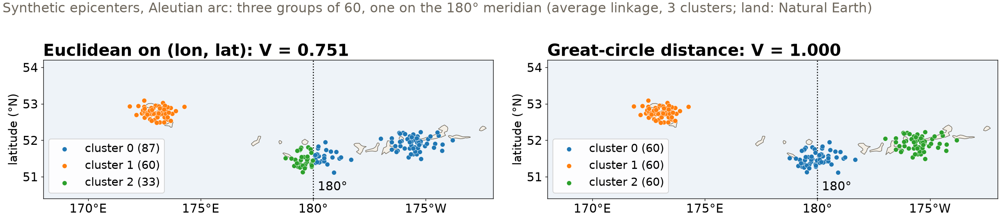
Treating longitude as x splits the group on the 180° meridian (V-measure 0.751); great-circle distance keeps all three groups whole (V-measure 1.000).
🖥️ Model & simulation 🪨 Solid Earth 📈 Seismology
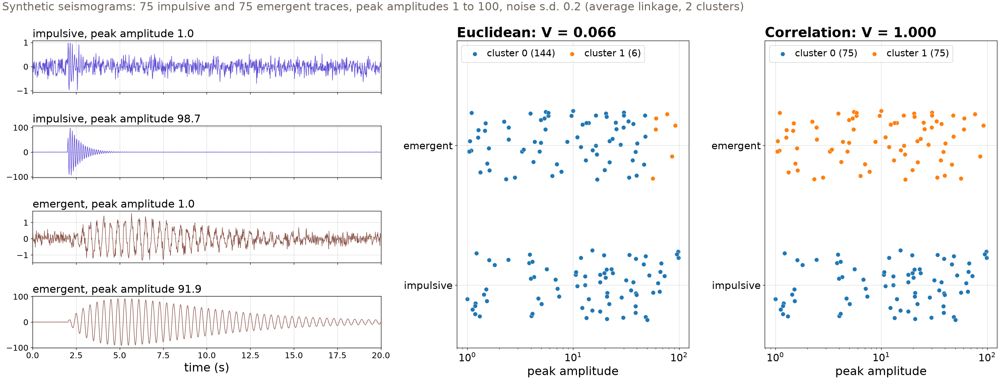
Euclidean distance groups the traces by energy (V-measure 0.066); correlation distance groups them by source shape, impulsive or emergent (V-measure 1.000).
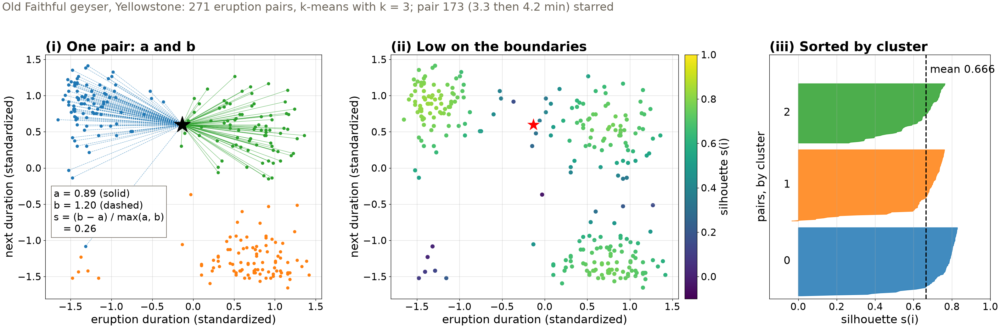
\[s(i) = \frac{b(i) - a(i)}{\max\{a(i), b(i)\}}\]
a: own cluster · b: nearest other cluster
| Mean s | > 0.70 | 0.51–0.70 | 0.26–0.50 | ≤ 0.25 |
|---|---|---|---|---|
| Structure | strong | reasonable | weak | none |
Kaufman & Rousseeuw (1990)
The starred pair scores 0.26, barely in its cluster; the mean over all pairs, 0.67, is reasonable structure.
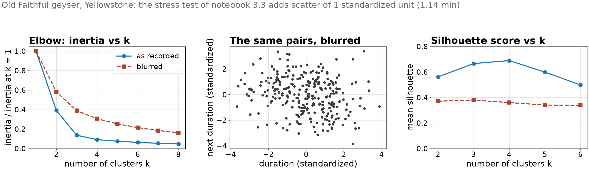
With the regimes visible, inertia drops sharply up to k = 3 and the silhouette peaks at k = 4; blur the same pairs by 1.1 minutes and both curves flatten (silhouette 0.34 to 0.38).
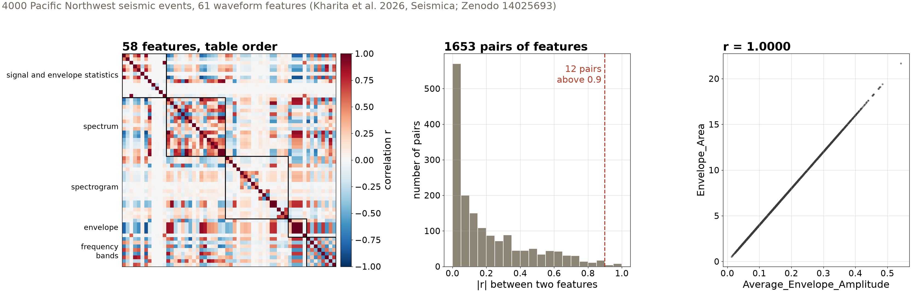
Many of the 61 waveform features measure nearly the same thing: 12 pairs correlate above 0.9, and one pair is identical (r = 1.0000), so a distance on all features counts those properties several times.
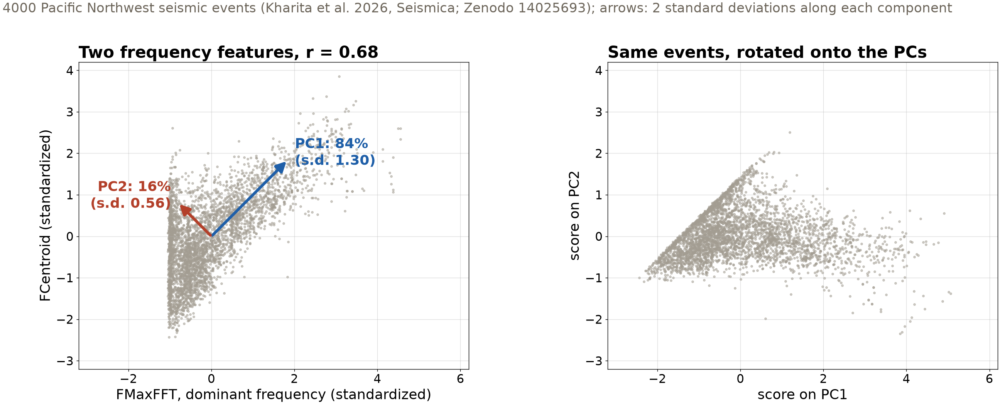
For two frequency features (r = 0.68), the first principal component points along the shared trend and carries 84% of the variance; the second carries the remaining 16%.
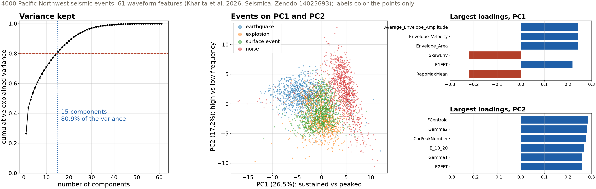
15 components keep 80.9% of the variance; PC1 (26.5%) contrasts sustained and peaked envelopes, and PC2 (17.2%) high and low frequency.
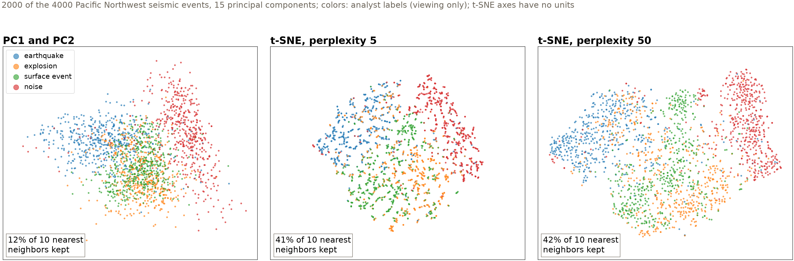
t-SNE keeps about 41% of each event’s 10 nearest neighbors, against 12% for the PC1–PC2 view; distances between groups, group sizes and the axes carry no meaning.
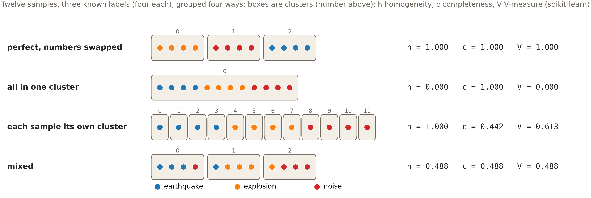
Homogeneity: does each cluster hold a single label? Completeness: does each label sit in a single cluster? V-measure, their harmonic mean, is 1 only when both hold.
📍 In-situ sensor 🪨 Solid Earth 📈 Seismology
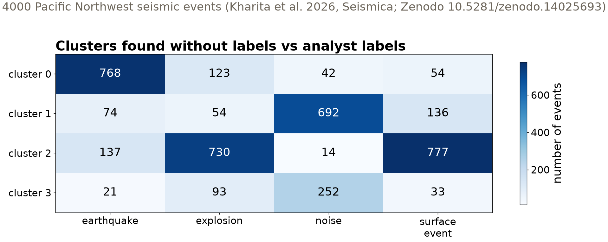
Earthquakes get one cluster and noise two; explosions and surface events share one (730 and 777 events). V-measure: 0.37.
| Method (k = 4) | Homogeneity | Completeness | V-measure |
|---|---|---|---|
| k-means on 15 principal components | 0.357 | 0.386 | 0.371 |
| k-means on all 61 features | 0.359 | 0.393 | 0.375 |
| Ward (hierarchical) on 15 components | 0.343 | 0.472 | 0.398 |
| Gaussian mixture on 15 components | 0.311 | 0.386 | 0.344 |
No method separates explosions from surface events; Ward scores highest only because one of its clusters holds most explosions and surface events together.
pixi run jupyter lab → 3.3_clustering.ipynb; read “How this notebook is organized” firstChapter 2 quiz closes today · Fri Oct 30: project proposal talks (Giving a scientific talk)
ESS 469/569 · Machine Learning in the Geosciences · Autumn 2026